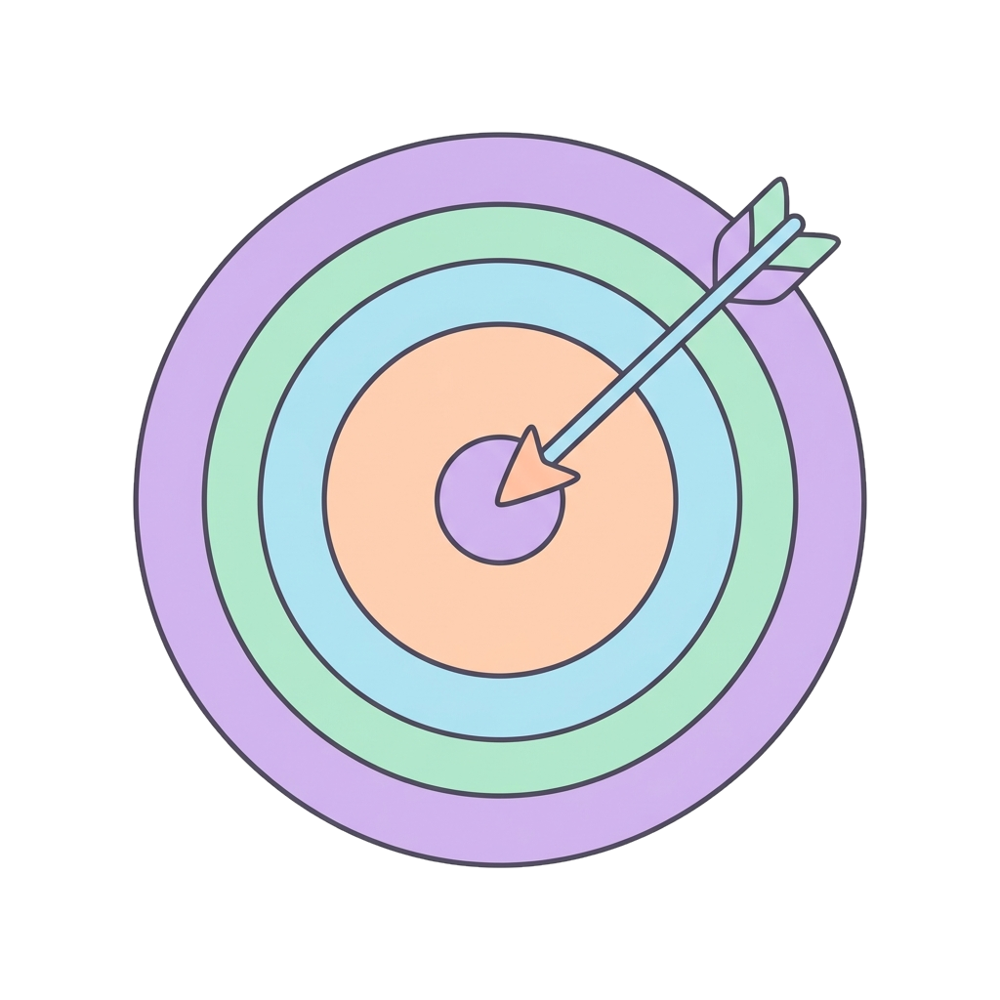

5 · Vie di somministrazione
Via intranasale e topica
Via intranasale Mucosa nasale→
Mucosa nasale→ SNC vicino→
SNC vicino→ Sangue
Sangue
Applicazione alla mucosa nasale.
- Utilizzo: generalmente per azione locale (decongestionanti).
- Può però essere usata per effetti sistemici — per esempio la desmopressina — grazie al rapido assorbimento e alla vicinanza al sistema nervoso centrale.
Via topica Pomata→
Pomata→ Pelle o mucosa→
Pelle o mucosa→

Effetto localeApplicazione diretta sulla pelle o sulle mucose.
- Obiettivo: cerca quasi sempre un effetto locale — antinfiammatori, antibiotici, protettori.
- Ha un basso assorbimento sistemico, quindi riduce le reazioni avverse nel resto del corpo.
17